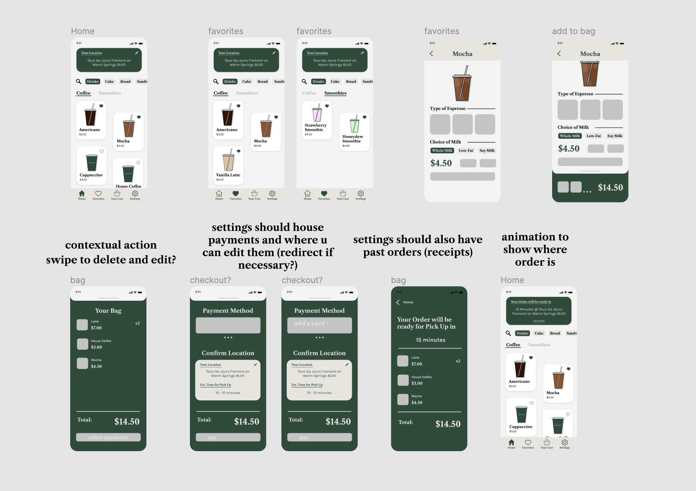

Due to the COVID-19 pandemic, I've missed going to local cafes. As a self-proclaimed cafe enthusiast, I decided to design a mobile app for Tous les Jours as a personal project.
Note: I have not worked there since 2019 and this is just for fun. Any research was based on my experience there or what I could find online. Pictures are from the Tous les Jours website.
A main pain point for employees was lack of digital tip, and during the pandemic the issue was ensuring safety.

- Pre-Ordering - By allowing customers to order ahead of time, the amount of time a customer spends in the store is decreased, limiting contact for both customers and employees.
- Reflect Inventory - Some customers are looking to buy specific things. If out-of-stock items were reflected in the app, and a customer could see them, customers would not have to make an unnecessary trip just to find the thing they wanted was out-of-stock.
- Convenience - Increased convenience and safety could bring in more customers.



Home - TLJ sells drinks (coffees and smoothes), cakes (piece cakes and full-sized), bread + pastries, and also sandwiches. I wanted to display the menu in a compact, but easily navigable way. I also wanted to include pictures, which parallels the experience of seeing the baked goods in-store.
Any customer service worker in the food industry knows the regulars always order the same thing, so I included a favorites page. The layout of the menus is staggered to make it easier for people to scan through using a left-right downward motion.
Fun fact: I didn't realize the TLJ website had photos so I had originally illustrated some drinks (as seen in the midfi above).

Ordering - In order to ensure the ordering process was convenient, I didn't keep the bottom dashboard. This way users are more focused on the UI for ordering. There is also easy access to the cart by swiping up so users would not have to abandon this order, go back to home, and tap on the cart icon. See the Figma prototype below if you'd like to try it! I also decided to not separate drinks by hot/iced and instead added an option to choose before adding to cart. This is because in real life, often people would order without specifying hot/iced and we'd have to ask for clarification.

Order Confirmation - I wanted to make sure all crucial information was presented on this confirmation such as what was ordered, prices, payment method used, and time until order is ready. Note: my friend pointed out that I forgot tax. Soemthing this remineded me off was, at TLJ we had no way of receiving digital tips in-store. In my next iteration I would add a place for tips before checkout.

Order Access - A common complaint about mobile ordering apps is not being able to check on your order after you submit it. To rememdy this, once you exited the order confirmation, there would be an animation showing you it has shrunk to the top of the home page.
Additional features I would like to include: Contextual actions within the cart (adjusting quantity, deleting, favoriting?), option to add a tip, option to input how you would like your order to be packed, and a rewards program. I also have to consider what the business side of this app would look like for employees.
Currently, TLJ uses Five Stars so it would be nice to either integrate Five Stars or integrate a rewards program into the app like 85C Bakery. I also have not mocked up the flow for changing location or ordering full-sized cakes (which is usually done over the phone or in-person).